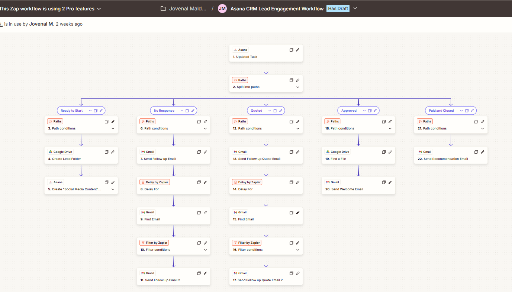
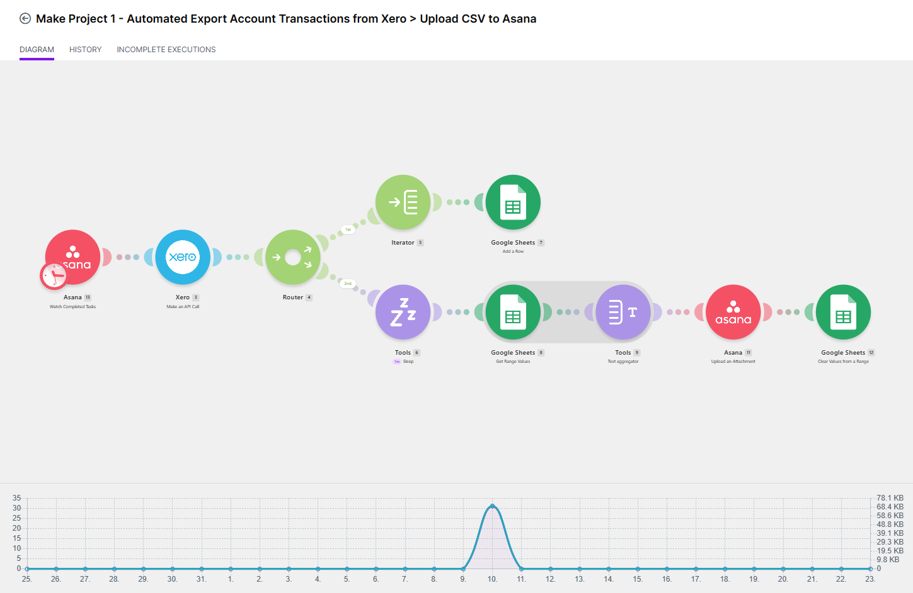
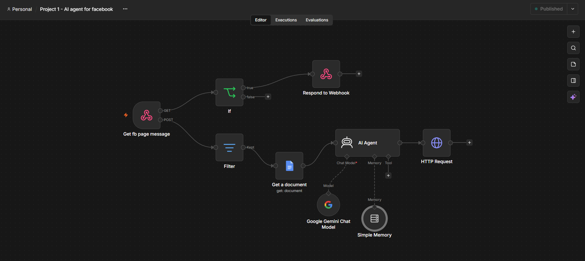
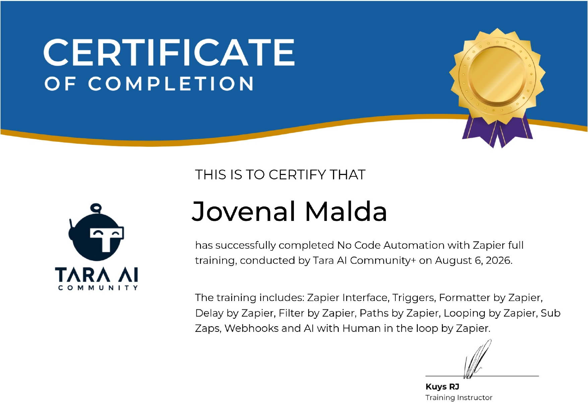

AI AUTOMATION SPECIALIST · FRONT-END DEVELOPER
I build practical automations that help businesses work smarter.
I help service-based businesses capture leads, automate follow-ups, manage customer inquiries, and simplify repetitive tasks using AI-powered workflows. With a background in front-end development, I can also connect these workflows to responsive websites, forms, APIs, and other digital tools.
Four years of shipping pixel-perfect, accessible interfaces.
Caloocan City, Philippines-based. Comfortable working solo or inside a team.
I’m Jovenal Malda, an aspiring AI Automation Specialist with a background in front-end development.
I build practical workflows using n8n, Zapier, Google Sheets, APIs, webhooks, and AI tools. My projects focus on helping service-based businesses capture leads, automate follow-ups, respond to customer inquiries, and reduce repetitive administrative work.
My front-end experience allows me to understand both sides of the workflow from the website or form where information is collected to the automated systems that process and route that information.
I’m currently expanding my automation portfolio through hands-on business case studies while remaining open to automation projects and front-end development opportunities.
· webhooks · API · GHL
What's actually in the toolbox.
Solid fundamentals, plus the AI tools that speed up getting there.
Web Development
The core of every build — semantic, responsive, and easy for the next person to maintain.
AI-Assisted Workflow
Tools I lean on to plan, prototype, and move through builds faster — plus the automation platforms I'm certified in.
Design & Tooling
The design and dev tools behind every handoff, plus the habits that keep a build consistent.
Currently leveling up: Node.js TypeScript
Automations I've built to cut out repetitive work.
Sample workflows — screenshots and short breakdowns of what each one does.

Asana CRM Lead Engagement Workflow
Triggered by an updated Asana task, this Zap splits leads into five paths by status — Ready to Start, No Response, Quoted, Approved, and Paid and Closed — then automates the next step for each: creating a lead folder in Google Drive, drafting social content, sending timed follow-up emails through Gmail, and closing out with a recommendation or welcome email.

Xero Transactions → Asana CSV Export
Watches for completed Asana tasks, pulls the matching transaction data from Xero, and routes it two ways in Make: one branch logs each row into Google Sheets, the other assembles the rows into a CSV, uploads it back to Asana as an attachment, and clears the working range for the next run.

AI Agent for Facebook Page Messages
A webhook-triggered n8n agent that receives incoming Facebook Page messages, filters out anything that isn't a valid message event, pulls context from a connected knowledge document, and uses an AI Agent — backed by Google Gemini and short-term memory — to generate and send a reply automatically.
Recent Front-end builds.
Live client sites, logged like the builds they were.
Kojima Paint
A multi-page corporate website for a 125+ year-old Japanese painting company, featuring scroll animations, a service guide, a recruitment page, and a full contact flow.
- Scroll animations
- Service guide page
- Recruitment page
- End-to-end contact flow
Mino Kensetsu
A construction company website built for 三野建設株式会社 (Mino Construction Co., Ltd.), showcasing their business areas, technology, and recruitment with a clean, professional layout.
- Business area overview
- Technology showcase
- Recruitment page
- Clean, professional layout
North Park
A monthly parking lot listing platform for Sapporo, making it easier for users to find and browse available parking spaces around the city.
- Listing search
- City-wide coverage
- User-friendly browse flow
SDP
A web project built with a clean structure and responsive design, demonstrating proficiency in semantic HTML, custom CSS, and vanilla JavaScript.
- Semantic HTML structure
- Custom CSS system
- Vanilla JS interactions
- Fully responsive
Courses and certifications.
Credentials that back up the skills above.

No Code Automation with Zapier
No Code Automation with Make.com
AI Automation with n8n
Same four stages, every build.
Design first, code second, polish always.
Understand the brief
What the site needs to do, who it's for, and what "done" looks like before any code gets written.
Turn the design into markup
Figma becomes semantic HTML and considered CSS — structured to hold up as the site grows.
Add interactivity & polish
JavaScript, animation, and accessibility passes, checked across browsers and screen sizes.
Test, optimize & ship
Assets optimized, images lazy-loaded, performance checked, then it goes live.
Let's build something great together.
Open to freelance projects and full-time roles.